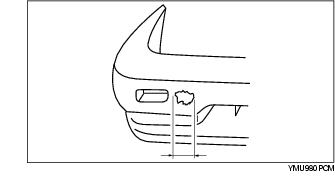
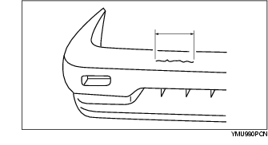
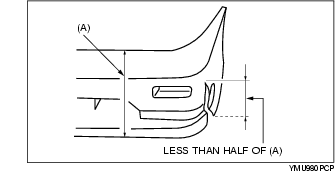

Repairable range of polypropylene bumpers
The three types of damaged bumpers shown below are considered repairable. Although a bumper which has been damaged greater than this could also be repaired, it should be replaced with a new one because such repair would detract from the looks and quality of the bumper. In addition, such repair is not considered reasonable in terms of work time.
Repairable Bumpers
1. A bumper with a hole less than 50 mm {1.97 in} in diameter.

2. A bumper with a crack less than 100 mm {3.94 in} in length.

3. A bumper with a crack less than 100 mm {3.94 in} in length that is less than half of the width of the bumper.
